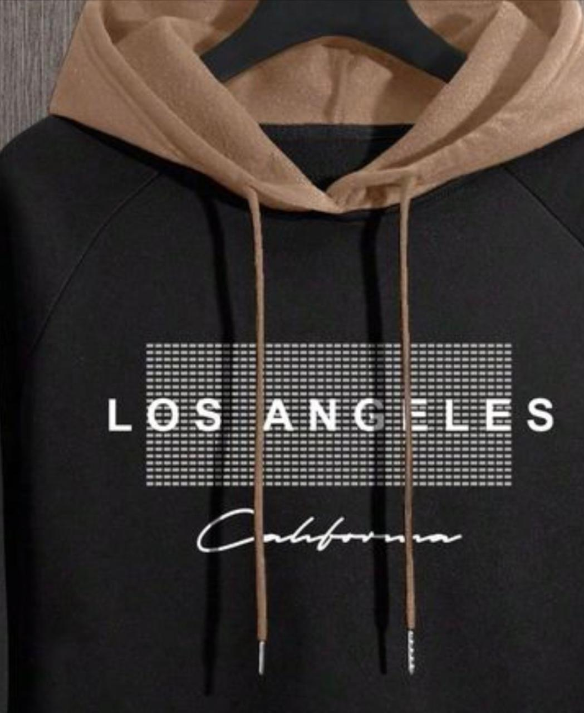

About COLD DECEMBER
Warmth in form. Cold in finish.
We craft elevated streetwear built for winter textures, sharp silhouettes, and everyday confidence. Designed with intent. Produced with precision.
Explore CollectionOur story
COLD DECEMBER is a small-batch studio focused on premium materials, tonal palettes, and details you can feel. We build essentials for the long season: pieces that hold their structure, age well, and carry presence.
From sourcing to finishing, we prioritize quality over volume and consistency over trend. The result: collections that feel intentional, clean, and unmistakably ours.
Design-led
Refined silhouettes built around comfort, balance, and longevity.
Small-batch
Short runs with strict oversight for a consistent premium finish.
Built to layer
Seasonless palettes and textures that work across climate shifts.
Made for the long season.
We obsess over the details that matter: drape, weight, and the way a piece moves through a cold day. Every drop is tested in real conditions and refined for performance and ease.
View our servicesOur five pillars
Fabric
Brushed knits, dense fleece, and structured weaves that hold form.
Fit
Balanced proportions that layer cleanly and move with you.
Finish
Refined trims, tonal stitching, and premium hardware throughout.
Function
Weather-first design with warmth, durability, and easy care.
Future
Thoughtful sourcing and long-wear construction to reduce waste.
Built with our community.
We listen to the people who wear our pieces every day. Feedback guides refinements, new silhouettes, and the materials we develop next.
Cold December Cares
We support local makers, workshop training, and winter outreach initiatives in our production communities.
Inside the studio
